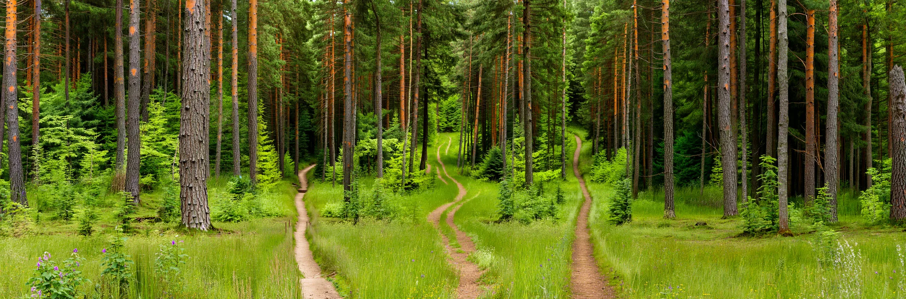

D2
🌙 Ronda
5
/ 25
Búnker
7
/ 20
Bot 1 ·
12
/20

1
2
3
3
1
+
3
1
2
1
1
1
BÚNKER
planta baja · ronda 5
BÚNKER
2▲ 1▼ en los boxes · ⚡3 · torre nv 3
⌃
CRIADEROS
BOX 1
2▲
BOX 2
1▼
ARMERÍA
torre nv 3
LABORATORIO
monstruo nv 2
CIENCIA
◆
◆
◇
BATERÍAS
ACCIONES
BÚNKER
2
3
4
3
Monstruo nv 2
al box 1
2
Torre nv 2
en C3
1
Avanzar
+1 casilla
2
Recursos
batería nv 1
🌿 Selva
❄️ Nieve
🌊 Pantano
✨ Magia
🏜️ Desierto